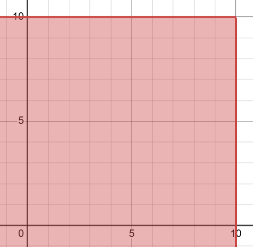
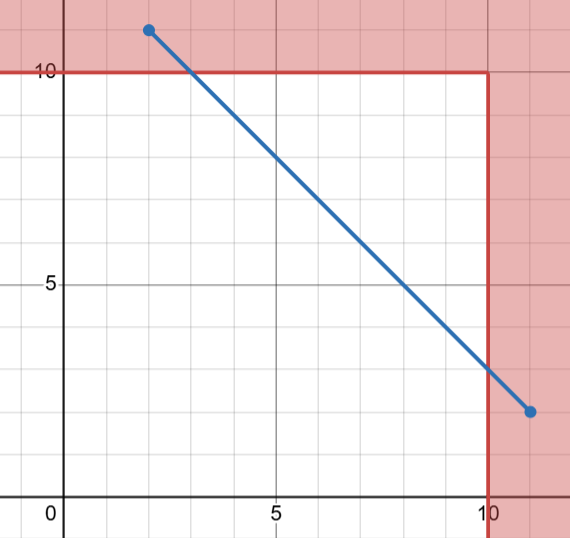
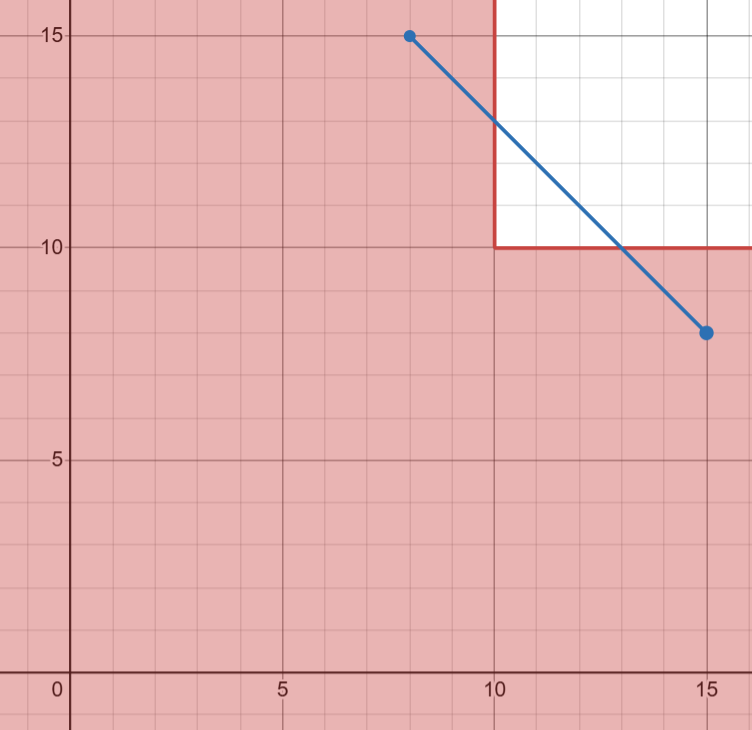

Let’s look at these constraints with \min and \max (from here: LP constraint problems) and determine which are modelable in an LP and which are not.
\max(x,y) \leq 10
\max(x,y) \geq 10
\min(x,y) \geq 10
\min(x,y) \leq 10
The questions we need to answer for each of these types of constraint questions are:
Is the constraint linear (does it create straight lines)?
Curved lines like those given by x^2 or \sqrt x are not modelable.
A sometimes useful heuristic for this question: if you see two decision variables multiplied together, it’s not linear.
Another useful heuristic: an expression is linear if we can represent it as the dot product c^\intercal \vec x, where c is a vector of constants and \vec x is the vector of our decision variables.
In other words, an expression is linear if it can be written c_1 x_1 + c_2 x_2 + \cdots + c_n x_n. (It doesn’t need to include all decision variables - any c_i can be any real number, including 0.)
Is the inequality one of \leq, \geq, or =?
We can’t model \neq or strict inequalities like < or >.
Is the feasible region convex?
If we can choose two points in the feasible region and draw a straight line between them that partially exits the feasible region, then the feasible region is not convex.
For each of the above constraints, the answer to the first two of these three questions is yes: the constraints are linear (creating straight lines), and the inequality is either \leq or \geq.
To determine convexity, the simplest method is to graph them using a tool like Desmos.
Here are the graphs for each:
\max(x,y) \leq 10
Desmos graph for \max(x,y) \leq 10
This feasible region is convex, so it is LP-modelable.
\max(x,y) \geq 10
Desmos graph for \max(x,y) \geq 10
As shown by the drawn points and line, the feasible region is not convex, so it is not LP-modelable.
\min(x,y) \geq 10
Desmos graph for \min(x,y) \geq 10
This feasible region is convex, so it is LP-modelable.
\min(x,y) \leq 10
Desmos graph for \min(x,y) \leq 10
As shown by the drawn points and line, the feasible region is not convex, so it is not LP-modelable.